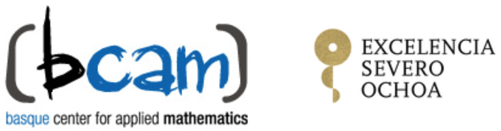

Le groupe thématique SIGMA (Signal-Image-Géométrie-Modélisation-Approximation) de la SMAI organise sa journée de rencontre annuelle le mardi 19 Octobre 2021.
Lieu : Laboratoire Jacques-Louis Lions, Sorbonne Université, Salle 309, couloir 15-16, site Jussieu.
Cette journée aura lieu en présentiel. Il sera néanmoins possible de la suivre à distance par zoom :
https://us02web.zoom.us/j/87544565014?pwd=OSszMUo0ZTRCKzhBdEVITk1jRTd2dz09
L’inscription pour venir en présentiel est obligatoire pour des raisons de logistique, pour s’inscrire, envoyer un message à :
Understanding the world through data and computation has always been at the heart of scientific discovery. In the past decade primarily data-driven approaches, such as neural networks, have been very successful. Nevertheless, the reason for this success is to some extent mysterious and raises multiple questions regarding the robustness, explainability, interpretability and fairness of the algorithms used. The answer to these questions is crucial when it comes to decision making.
In recent years, there has been increasing activity in building bridges between these new ideas and other well-established approaches based on models typically derived from first principles. However, the computational cost of the latter makes them unaffordable except in low dimensions, which is a limitation from which neural networks are exempt. Establishing solid connections between these two different points of view have already proved to be extremely fruitful.
The Spanish ‘Mathematical Strategic Network’ (Red Estratégica de Matemáticas, REM) organizes a one-week workshop in 8-11 November 2021 in Valladolid, Spain, with the aim of bringing together researchers in mathematics, machine learning, and data science, to exchange ideas and progress in the construction of new bridges among these fields and make visible the work already done.
The workshop will be structured around five plenary sessions by leading scientists on the international scene, plus three round-tables and a large number (20-25) of thematic minisymposia.
The REM is a network of mathematical research institutes which aims at fostering the international presence of the Spanish research in mathematics, the creation of synergies among the mathematical scientific community and the socioeconomic impact of Spanish mathematical research. It promotes the dissemination and transfer of mathematical technology, orienting research towards the needs of companies, industries and public administrations.
El taller en Non-Linear Analysis and Control Theory se va a celebrar los próximos días 3 al 5 de noviembre para celebrar el 60 cumpleaños del profesor Enrique Zuazua Iriondo. Esta actividad está organizada por el Centro de Modelamiento Matemático de la Universidad de Chile.
Debido a la crisis sanitaria la actividad se realiza por videoconferencia. El acceso es libre pero uno debe registrarse previamente en su página web. Para más información visitar la página:
Rafael Orive
Our newly established Department of Data Science (DDS) is looking for 4 Full Professors - Open Topic in Data Science within the context of the High-Tech Agenda Bavaria.
Positions available: 4.
Location: Department of Data Science, FAU Erlangen-Nürnberg (Germany).
DEADLINE: November 15th, 2021.
We seek to appoint leading experts (including early career scientists) with internationally visible research and teachings profiles in the mathematical aspects of data science, i.e:
This is the first announcement for the upcoming International Conference on Transport Theory, ICTT-27, to be organized in Bertinoro (near Bologna, Italy) at the convention center of the University of Bologna. The conference will take place at this venue - pending Covid-19 health restrictions - December 12-18, 2021.
Organizing scientific | Scientific committee |
Domiziano Mostacci (Bologna University) | Barry Ganapol (University Of Arizona), Chair |
Maria Groppi (Parma University) | Luigi Barletti (Florence University) |
Jorge Fernández (Bologna University) | Bardo Bodmann (Universidade Federal do Rio Grande Do Sul) |
Francesco Teodori (Bologna University) | Jorge Fernández (Bologna University) |
Paola Di Marzo (Bologna University) | Roberto Furfaro (University Of Arizona) |
Davide Giusti (Enea Bologna) | Nick Gentile (Lawrence Livermore National Laboratory) |
Federico Rocchi (Enea Bologna) | Maria Groppi (Parma University) |
Salvatore Lepiane (Bologna University) | Fausto Malvagi (Institut de Radioprotection et Sureté Nucléaire) |
| Domiziano Mostacci (Bologna University) |
| Imre Paszit (Chalmers University Of Technology) |
| Alberto Previti (Framatome) |
| Anil Prinja (University Of New Mexico) |
| Richard Sanchez (CEA) |
| Marco Sumini (Bologna University) |
| Andrea Zoia (CEA) |
For more informations please check the workshop web-site, or contact domiziano.mostacci@unibo.it, mmichelacci@ceub.it (local organizing secretariat).


BCAM - Severo Ochoa Course program in Pure Mathematics with 3 courses:
| 27 September - 15 November. Mondays and Wednesdays 16:00-18:00 |
| Course Online |
| GROUP COHOMOLOGY AND BIERI-STREBEL-NEUMANN-RENZ INVARIANTS |
| C. Martínez (Universidad de Zaragoza) |
| Inaugural lecture: Peter Kropholler (University of Southampton). Wednesday, September 29th, 2021 at 12:00. |
| 10 January - 22 February, 2022. Mondays and Wednesdays 16:00-18:00. It will also take place Friday, February 11th from 16:00 to 18:00 |
| Course BCAM and Online. |
| HARMONIC ANALYSIS |
| I. Parissis (UPV/EHU), L. Roncal and M. Sousa (BCAM) |
| Inaugural lecture: M. J. Carro (U. Complutense de Madrid). Wednesday, December 15th 2021, from 12:00 to 13:45. |
| 01 March - 05 May, 2022. with a 2 weeks break for Easter. Tuesdays and Thursdays from 16:00 to 18:00 |
| Course UPV/EHU and Online |
| KÁHLER MANIFOLDS |
| M. Fernández (UPV/EHU) |
| Inaugural lecture: V. Apostolov (Université du Québec à Montréal) February 2022, precise time to be announced. |
Ya está disponible un nuevo volumen de la prestigiosa serie SEMA-SIMAI donde se recogen los principales resultados de los cursos y conferencias impartidos durante la XVIII Escuela Hispano-Francesa Jacques-Louis Lions de Simulación Numérica en Física e Ingeniería, que tuvo lugar en Las Palmas de Gran Canaria del 25 al 29 de junio de 2018.
Este volumen, editado por David Greiner, María Isabel Asensio y Rafael Montenegro Armas, consta de seis capítulos y es muy recomendable para estudiantes graduados en Matemáticas o Ingeniería interesados en la simulación numérica, ya sea como tema de investigación o en el campo de las aplicaciones industriales.
También puede interesar a investigadores y técnicos de alto nivel que trabajan en la industria y que están interesados en el uso de técnicas numéricas de última generación. Además, el libro se puede utilizar como libro de texto para cursos de máster en Matemáticas, Física o Ingeniería.
Puedes consultar el contenido del mismo en el siguiente enlace Numerical Simulation in Physics and Engineering: Trends and Applications - Lecture Notes of the XVIII ‘Jacques-Louis Lions’ Spanish-French School | David Greiner | Springer.